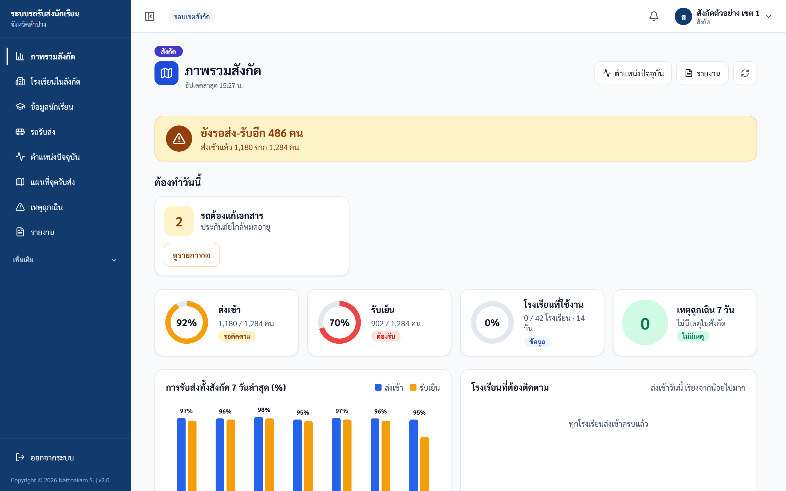
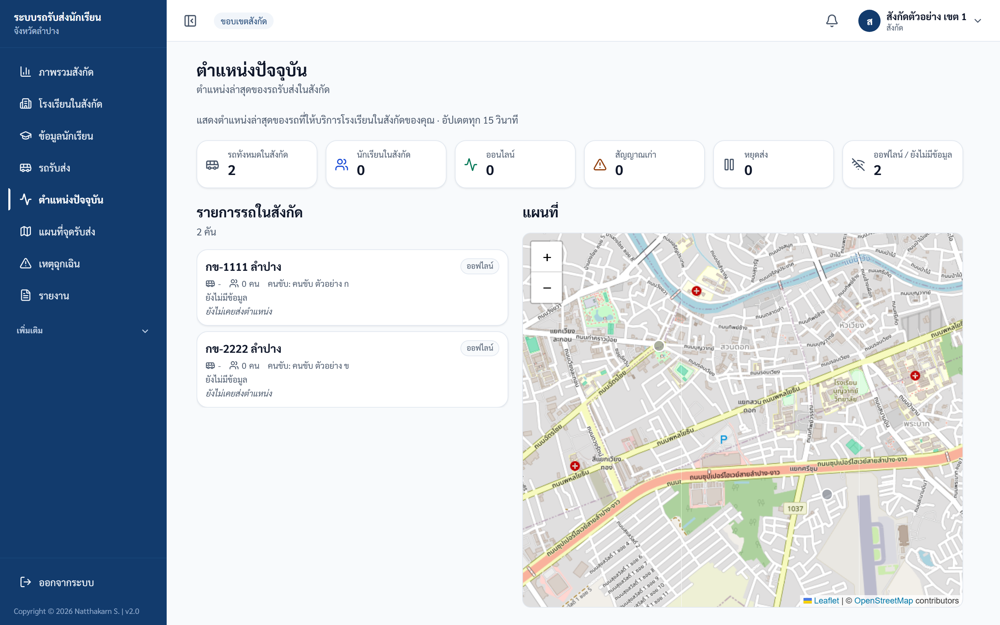
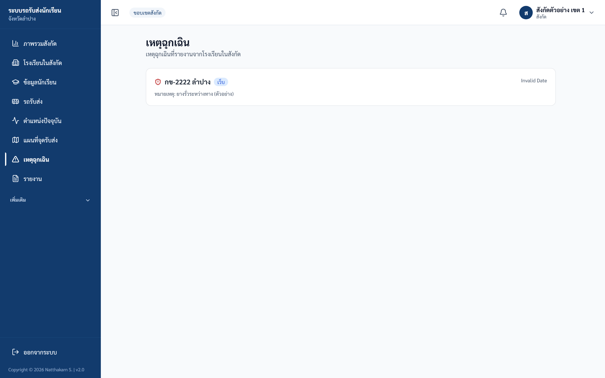
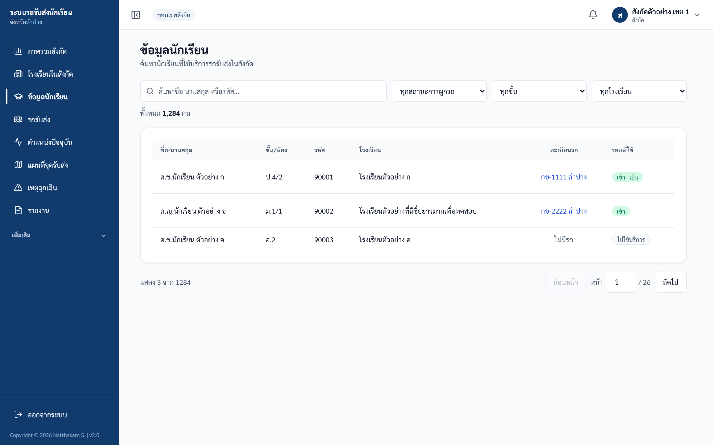
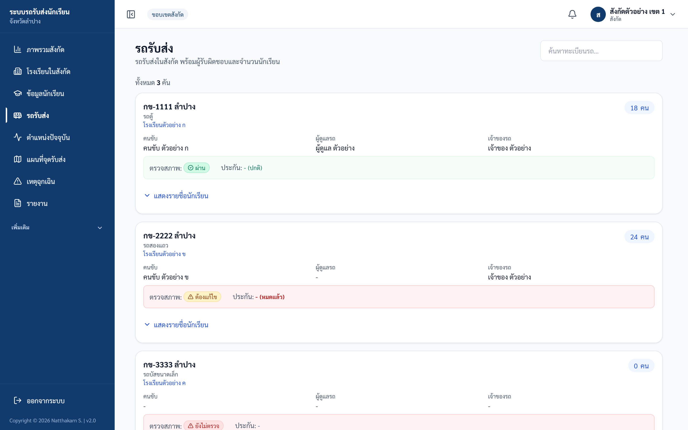
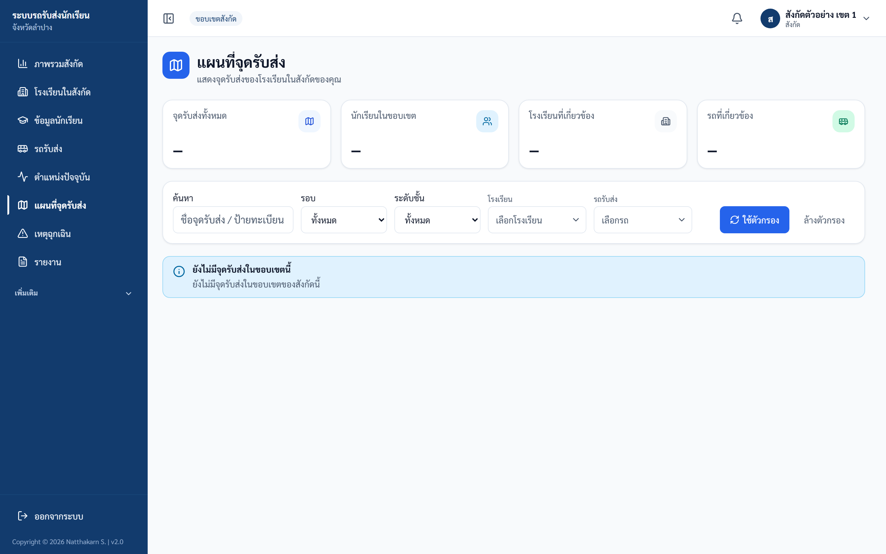
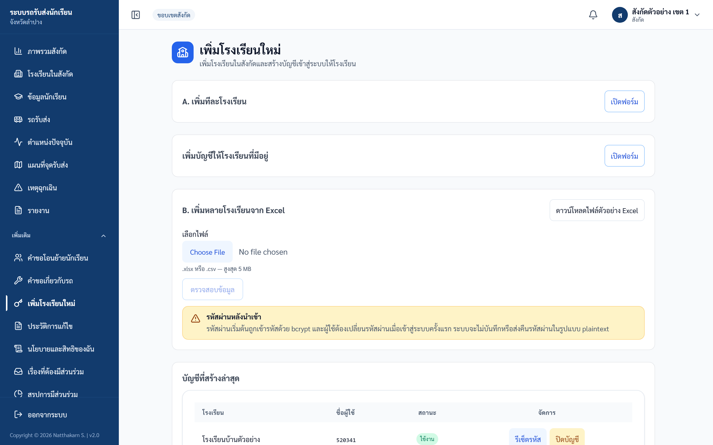
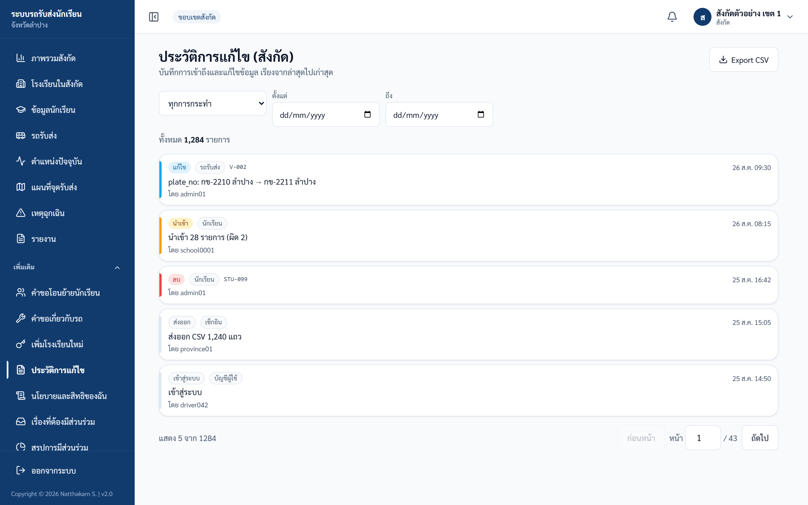
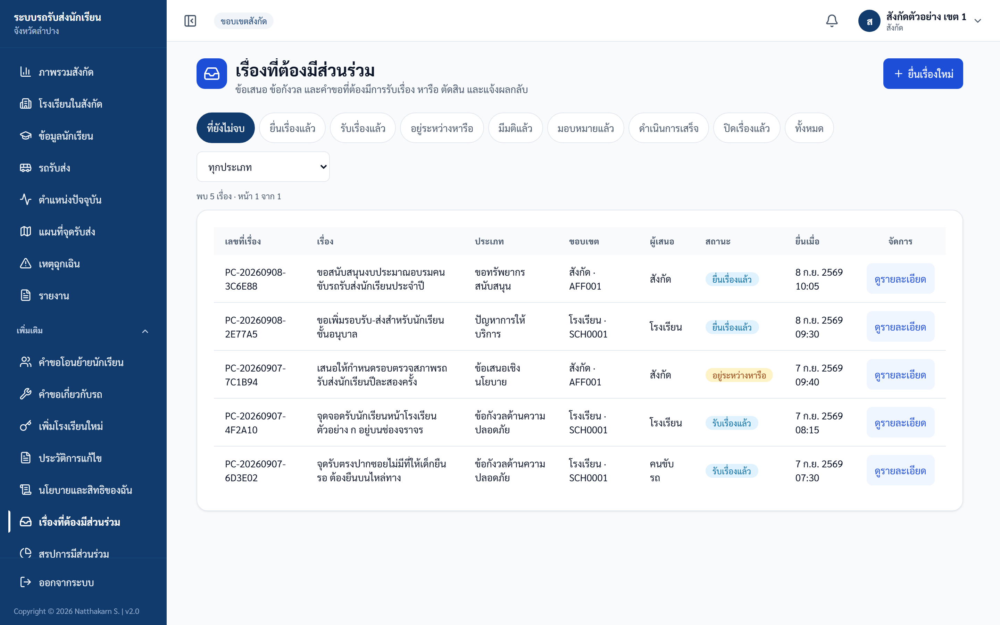
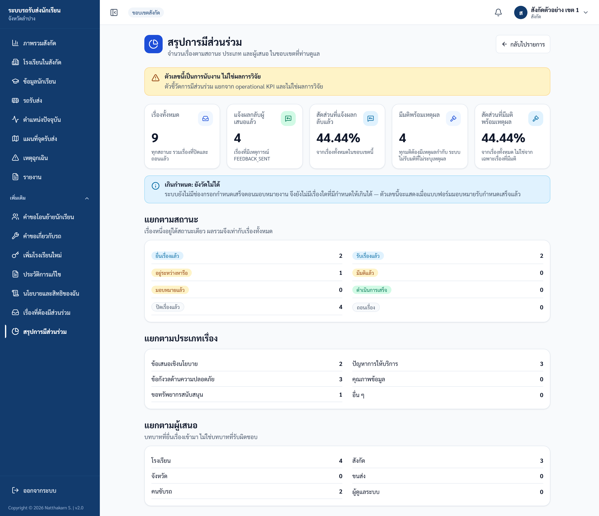

คู่มือสังกัด / สำนักงานเขตพื้นที่การศึกษา
ℹ️ เว็บไซต์ https://schoolbuslampang.com · ปรับปรุง 24 ต.ค. 2569 · ภาพในคู่มือเป็นข้อมูลตัวอย่าง ชื่อและเบอร์โทรถูกเบลอไว้
คู่มือนี้สำหรับใคร และทำอะไรได้บ้าง
สำหรับเจ้าหน้าที่สังกัดหรือสำนักงานเขตพื้นที่การศึกษา บัญชีของคุณเห็นเฉพาะโรงเรียนในสังกัดของคุณ
- ดูทุกวันว่าโรงเรียนไหนส่งเด็กเช้าและรับเด็กเย็นครบแล้ว
- เตือนโรงเรียนที่ยังมีรายการค้าง
- ดูตำแหน่งรถ และเหตุฉุกเฉินจากรถในสังกัด
- ดูจำนวนโรงเรียน นักเรียน และรถ แล้วส่งออกเป็นไฟล์ Excel
- เพิ่มโรงเรียนใหม่ สร้างบัญชี และตั้งรหัสผ่านใหม่ให้โรงเรียนในสังกัด
- อนุมัติคำขอย้ายนักเรียนและคำขอเกี่ยวกับรถ จากโรงเรียนในสังกัด
💡 บัญชีนี้ใช้ ดูและติดตาม เป็นหลัก คุณเช็กชื่อเด็กและแก้ข้อมูลนักเรียนไม่ได้ งานนี้เป็นของคนขับ ครู และโรงเรียน
ℹ️ ตั้งแต่ภาคเรียนที่ 2 (12 ต.ค. 2569) ครูประจำสายชั้นเช็กชื่อเด็กที่โรงเรียนได้ด้วย ตัวเลขส่งเช้า/รับเย็นที่คุณเห็นจึงรวมรายการที่ครูบันทึกแล้ว ถ้าโรงเรียนไหนยังไม่มีบัญชีครู ให้แจ้งโรงเรียนสร้างที่เมนู เพิ่มเติม › บัญชีครูประจำสายชั้น
เริ่มต้นใช้งาน
เข้าสู่ระบบ
- เปิด schoolbuslampang.com
- พิมพ์ชื่อผู้ใช้ในช่อง ชื่อผู้ใช้หรือทะเบียนรถ
- พิมพ์รหัสผ่าน
- กด เข้าสู่ระบบ

ภาพ: หน้าเข้าสู่ระบบ
เข้าได้แล้วจะเห็นหน้า ภาพรวมสังกัด
ชื่อผู้ใช้คืออะไร
ชื่อผู้ใช้และรหัสผ่านแรกได้จากผู้ดูแลระบบระดับจังหวัด คุณสมัครเองไม่ได้ ข้อความ "เช่น school001 หรือ กข-1234" ในช่องเป็นแค่ตัวอย่าง ไม่ต้องพิมพ์ตาม
เข้าครั้งแรก ต้องเปลี่ยนรหัสผ่าน
ถ้ายังใช้รหัสผ่านแรก ระบบจะพาไปหน้าเปลี่ยนรหัสผ่านก่อน และใช้เมนูอื่นไม่ได้จนกว่าจะเปลี่ยนเสร็จ
- พิมพ์ รหัสผ่านปัจจุบัน
- พิมพ์ รหัสผ่านใหม่ อย่างน้อย 8 ตัว และต้องไม่ซ้ำรหัสเดิม
- พิมพ์รหัสใหม่อีกครั้งในช่อง ยืนยันรหัสผ่านใหม่
- กด เปลี่ยนรหัสผ่าน

ภาพ: หน้าเปลี่ยนรหัสผ่าน
เปลี่ยนเสร็จแล้ว ระบบอาจให้เข้าสู่ระบบใหม่ ให้ใช้รหัสใหม่
ลืมรหัสผ่าน
บัญชีสังกัดตั้งรหัสใหม่ให้ตัวเองไม่ได้ ให้ติดต่อ ผู้ดูแลระบบระดับจังหวัด (หน้าเข้าสู่ระบบมีแถบ ลืมรหัสผ่านหรือเข้าใช้งานไม่ได้ บอกช่องทางเดียวกันนี้)
เมนูอยู่ตรงไหน
บนคอมพิวเตอร์ เมนูอยู่ด้านซ้าย เมนูที่ใช้นาน ๆ ครั้งพับไว้ใต้คำว่า เพิ่มเติม กดเพื่อเปิด
| กลุ่ม | เมนู |
|---|---|
| ใช้ทุกวัน | ภาพรวมสังกัด · โรงเรียนในสังกัด · ข้อมูลนักเรียน · รถรับส่ง · ตำแหน่งปัจจุบัน · แผนที่จุดรับส่ง · เหตุฉุกเฉิน · รายงาน |
| เพิ่มเติม | คำขอโอนย้ายนักเรียน · คำขอเกี่ยวกับรถ · เพิ่มโรงเรียนใหม่ · ประวัติการแก้ไข · นโยบายและสิทธิของฉัน · เรื่องที่ต้องมีส่วนร่วม · สรุปการมีส่วนร่วม |

ภาพ: ตัวอย่างเมนูเมื่อเปิด "เพิ่มเติม" (ถ่ายจากบัญชีโรงเรียน รายการของสังกัดดูตามตารางด้านบน)
บนมือถือ มีปุ่ม 4 ปุ่มที่ด้านล่างจอ: หน้าแรก · โรงเรียน · ตำแหน่ง · รายงาน เมนูอื่นให้กดปุ่ม ☰ มุมซ้ายบน
งานประจำวัน (ทำตามลำดับ)
- เปิดหน้า ภาพรวมสังกัด ดูว่าวันนี้ครบหรือยัง
- เตือนโรงเรียนที่ยังมีรายการค้าง
- ดูตำแหน่งรถ เมื่ออยากรู้ว่ารถอยู่ไหน
- เปิดดูเหตุฉุกเฉิน
1. ดูหน้าภาพรวมสังกัด
- กดเมนู ภาพรวมสังกัด (หน้านี้เปิดเองหลังเข้าสู่ระบบ)
- อ่านแถบสีใหญ่ด้านบน บอกสถานการณ์วันนี้ในประโยคเดียว
- ดูการ์ด ต้องทำวันนี้ แต่ละใบมีปุ่มพาไปจัดการ
- ดูตัวเลข 4 ช่อง: ส่งเช้า · รับเย็น · โรงเรียนที่ใช้งาน · เหตุฉุกเฉิน 7 วัน
- อยากดูรายละเอียด กด ดูรายละเอียด ที่หัวข้อด้านล่างของหน้า

ภาพ: หน้าภาพรวมสังกัด แถบสรุปด้านบน การ์ดต้องทำวันนี้ ตัวเลข 4 ช่อง และกราฟ
| แถบด้านบนขึ้นว่า | หมายความว่า |
|---|---|
| ยังไม่เริ่มรอบวันนี้ (สีเทา) | ยังไม่มีโรงเรียนเช็กชื่อรอบเช้า |
| N โรงเรียนยังไม่เช็กชื่อรอบเช้า (สีแดง) | มีโรงเรียนยังไม่เริ่ม ควรเตือน |
| ยังรอส่ง-รับอีก N คน / รอบเย็นยังรอรับ N คน (สีเหลือง) | เริ่มแล้วแต่ยังไม่ครบ |
| ทุกโรงเรียนในสังกัดรับส่งครบแล้ว (สีเขียว) | เรียบร้อย |
สีของป้ายใช้ความหมายเดียวกันทั้งระบบ: เขียว = เรียบร้อย · เหลือง = รอติดตาม · แดง = ต้องรีบ · เทา = ยังไม่เริ่ม
หน้านี้อัปเดตเองเป็นระยะ ถ้าอยากได้ข้อมูลใหม่ทันที กดปุ่มวงกลมลูกศรมุมขวาบน
สถานะความพร้อมของโรงเรียน
กด ดูรายละเอียด ที่หัวข้อ สถานะโรงเรียนในสังกัด จะเห็นทุกโรงเรียน พร้อมป้ายบอกความพร้อม
| ป้าย | หมายความว่า / ให้ทำแบบนี้ |
|---|---|
| มีข้อมูลนักเรียนแล้ว (เขียว) | โรงเรียนใส่ข้อมูลนักเรียนแล้ว พร้อมใช้งาน |
| เข้าสู่ระบบแล้ว รอนำเข้าข้อมูล (เหลือง) | โรงเรียนเข้าระบบแล้วแต่ยังไม่มีนักเรียน ให้ติดตามให้โรงเรียนนำเข้ารายชื่อนักเรียน |
| ยังไม่เข้าใช้ (เทา) | โรงเรียนยังไม่เคยเข้าระบบ ให้ส่งชื่อผู้ใช้และรหัสผ่านให้โรงเรียน หรือตั้งรหัสผ่านใหม่ให้ (ดู "จัดการบัญชีโรงเรียน") |
ทำเสร็จแล้วจะเห็นว่าวันนี้โรงเรียนไหนครบ โรงเรียนไหนยังค้าง
2. เตือนโรงเรียนที่ยังค้าง
- กด ดูโรงเรียนที่ต้องติดตาม ในแถบด้านบน หรือกด ดูรายละเอียด ที่หัวข้อ โรงเรียนที่ยังมีรายการค้าง
- หาโรงเรียนที่ต้องการ แล้วกด แจ้งเตือน
- ระบบคัดลอกข้อความเตือนไว้ให้ และขึ้นว่า "คัดลอกข้อความแล้ว — ส่งผ่าน LINE/โทรศัพท์ได้เลย"
- เปิด LINE แล้ววางข้อความส่งให้โรงเรียน หรือโทรบอก
⚠️ ปุ่ม แจ้งเตือน ไม่ได้ส่งข้อความถึงโรงเรียนเอง คุณต้องนำข้อความไปส่งเอง
ทำเสร็จแล้วปุ่มจะเปลี่ยนเป็น แจ้งแล้ว พร้อมเวลา
3. ดูตำแหน่งรถ
- กดเมนู ตำแหน่งปัจจุบัน (มือถือ: ปุ่ม ตำแหน่ง)
- ดูตัวเลขด้านบน เช่น ออนไลน์ · สัญญาณเก่า · ออฟไลน์ / ยังไม่มีข้อมูล
- กดรถในรายการ เพื่อดูตำแหน่งบนแผนที่

ภาพ: หน้าตำแหน่งปัจจุบัน
รถจะขึ้นบนแผนที่เมื่อคนขับกด "เริ่มส่งตำแหน่ง" เท่านั้น ถ้าไม่มีรถขึ้นเลยถือว่าปกติ
4. ดูเหตุฉุกเฉิน
- กดเมนู เหตุฉุกเฉิน
- อ่านแต่ละรายการ: ทะเบียนรถ เวลา รายละเอียด และผลลัพธ์
- ถ้ามีเหตุ ให้ติดต่อโรงเรียนหรือคนขับตามขั้นตอนของหน่วยงาน

ภาพ: หน้าเหตุฉุกเฉิน
หน้านี้ดูได้อย่างเดียว ถ้าไม่มีเหตุจะขึ้นว่า "ไม่มีเหตุฉุกเฉิน"
งานอื่น ๆ (ทำเมื่อจำเป็น)
ดูสรุปโรงเรียนในสังกัด และส่งออก Excel
ใช้เมื่อต้องรายงานจำนวนโรงเรียน นักเรียน และรถของสังกัด
- กดเมนู โรงเรียนในสังกัด (มือถือ: ปุ่ม โรงเรียน)
- ดูกล่อง สรุปโรงเรียนในสังกัด บอกจำนวน โรงเรียน (แห่ง) · นักเรียน (คน) · รถรับส่ง (คัน)
- ด้านล่างกล่องเป็นการ์ดของแต่ละโรงเรียน บอกจำนวนนักเรียนและรถ
- อยากดูเป็นตาราง กด ดูรายงาน จะเปิดหน้าต่าง รายงานสรุปโรงเรียนในสังกัด
- อยากพิมพ์ กด พิมพ์ / บันทึก PDF ดูเสร็จกด ปิดรายงาน
- อยากได้ไฟล์ กด ส่งออก Excel
ทำเสร็จแล้วจะขึ้นว่า "ดาวน์โหลด Excel สำเร็จ" ไฟล์ชื่อขึ้นต้นด้วย affiliation-schools ตามด้วยวันที่
ℹ️ รถคันเดียวรับส่งได้หลายโรงเรียน ยอดรถรวมของสังกัดจึงนับคันละครั้ง และอาจน้อยกว่าผลรวมรายโรงเรียน
ตัวเลขนี้เป็นข้อมูลที่อยู่ในระบบตอนนี้ ไม่ใช่การยืนยันส่งรายงานประจำภาคเรียน โรงเรียนที่ขึ้น 0 ไม่ได้แปลว่ายังไม่ส่งรายงาน
ค้นหานักเรียน
- กดเมนู ข้อมูลนักเรียน
- พิมพ์ชื่อ นามสกุล หรือรหัสนักเรียนในช่องค้นหา
- เลือกตัวกรองได้ เช่น ทุกชั้น · ทุกโรงเรียน · ทุกสถานะการผูกรถ (เลือก "ยังไม่ผูกรถ" เพื่อหาเด็กที่โรงเรียนยังไม่ระบุรถ)
- กดทะเบียนรถในแถว เพื่อไปดูรถคันนั้น

ภาพ: หน้าข้อมูลนักเรียน
หน้านี้ไม่แสดงชื่อและเบอร์ผู้ปกครอง เพื่อปกป้องข้อมูลส่วนบุคคล ถ้าต้องการ ให้ถามโรงเรียน กด ล้างตัวกรอง เพื่อเริ่มค้นใหม่
ดูข้อมูลรถ
- กดเมนู รถรับส่ง
- พิมพ์ทะเบียนรถในช่องค้นหา
- ดูการ์ดรถ: ประเภทรถ คนขับ ผู้ดูแลรถ ประกัน และการตรวจสภาพ
- กด แสดงรายชื่อนักเรียน เพื่อดูเด็กในรถคันนั้น

ภาพ: หน้ารถรับส่ง
ช่องผู้ปกครองและเบอร์โทรจะขึ้น "-" เสมอ ถือว่าปกติ
ดูแผนที่จุดรับส่ง
- กดเมนู แผนที่จุดรับส่ง
- เลือกตัวกรอง เช่น รอบ · โรงเรียน · รถรับส่ง
- กด ใช้ตัวกรอง

ภาพ: แผนที่จุดรับส่ง
แผนที่แสดงเป็นจำนวนรวมต่อจุด ไม่แสดงชื่อหรือที่อยู่ของเด็ก
ทำรายงานและดาวน์โหลดไฟล์
- กดเมนู รายงาน
- เลือกแท็บ รายวัน · รายเดือน · สรุปภาพรวม
- เลือกวันที่ในช่อง วันที่ของรายงาน หรือเดือนในช่อง เดือนของรายงาน (แท็บสรุปภาพรวมไม่ต้องเลือก)
- กดปุ่ม CSV · Excel · PDF เพื่อดาวน์โหลด

ภาพ: หน้ารายงาน (ภาพจากบัญชีผู้ดูแลระบบ บัญชีสังกัดจะเห็น 3 แท็บ)
รายงานแสดงเฉพาะข้อมูลในสังกัดของคุณ
เพิ่มโรงเรียนใหม่
กด เพิ่มเติม แล้วกด เพิ่มโรงเรียนใหม่

ภาพ: หน้าเพิ่มโรงเรียนใหม่
เพิ่มทีละโรงเรียน
- ที่หัวข้อ A. เพิ่มทีละโรงเรียน กด เปิดฟอร์ม
- พิมพ์ รหัสโรงเรียน (ตัวเลข 6–10 หลัก)
- พิมพ์ ชื่อโรงเรียน
- พิมพ์ ชื่อผู้ใช้ เป็นรหัส OBEC ตัวเลข 6 หลัก
- กด เพิ่มโรงเรียนและสร้างบัญชี
ทำเสร็จแล้วจะขึ้นว่า "เพิ่มโรงเรียนและสร้างบัญชีสำเร็จ" รหัสผ่านแรกของโรงเรียนคือ รหัสโรงเรียน โรงเรียนต้องเปลี่ยนเมื่อเข้าครั้งแรก
เพิ่มบัญชีให้โรงเรียนที่มีอยู่แล้ว
- ที่หัวข้อ เพิ่มบัญชีให้โรงเรียนที่มีอยู่ กด เปิดฟอร์ม
- เลือก โรงเรียน
- พิมพ์ ชื่อผู้ใช้ ตัวเลข 6 หลัก ที่ยังไม่มีใครใช้
- กด เพิ่มบัญชี
เพิ่มหลายโรงเรียนจากไฟล์ Excel
- ที่หัวข้อ B. เพิ่มหลายโรงเรียนจาก Excel กด ดาวน์โหลดไฟล์ตัวอย่าง Excel
- กรอกข้อมูลในไฟล์ให้ครบทุกช่อง รวมถึงรหัสผ่านแรกของแต่ละโรงเรียน แล้วจดรหัสไว้ (ระบบจะไม่แสดงรหัสให้ดูอีก)
- เลือกไฟล์ แล้วกด ตรวจสอบข้อมูล
- ดูผล ผ่าน / ไม่ผ่าน ถ้าไม่ผ่าน อ่านเหตุผลในช่อง ข้อความ แล้วแก้ไฟล์
- กด ยืนยันนำเข้าเฉพาะรายการที่ผ่าน แล้วกด นำเข้า
ทำเสร็จแล้วจะขึ้นว่า "นำเข้าสำเร็จ" พร้อมจำนวนบัญชีที่สร้าง แถวที่ไม่ผ่านจะถูกข้าม
จัดการบัญชีโรงเรียน (ตั้งรหัสผ่านใหม่ / ปิด-เปิดบัญชี)
ใช้เมื่อโรงเรียนลืมรหัสผ่าน หรือต้องการหยุดใช้บัญชี คุณทำเองได้ ไม่ต้องติดต่อผู้ดูแลระบบ
- เปิดหน้า เพิ่มโรงเรียนใหม่ แล้วเลื่อนลงไปที่ตาราง บัญชีที่สร้างล่าสุด
- หาโรงเรียนที่ต้องการ (มีหลายหน้า กด ถัดไป เพื่อดูต่อ)
- ตั้งรหัสผ่านใหม่: กด รีเซ็ตรหัส พิมพ์ รหัสผ่านใหม่ และ ยืนยันรหัสผ่านใหม่ แล้วกด รีเซ็ตรหัสผ่าน
- ปิดบัญชี: กด ปิดบัญชี แล้วกดยืนยัน (เปิดคืนได้ด้วยปุ่ม เปิดบัญชี)
ตั้งรหัสใหม่เสร็จจะขึ้นว่า "รีเซ็ตรหัสผ่านสำเร็จ" แจ้งรหัสใหม่ให้โรงเรียน โรงเรียนต้องเปลี่ยนรหัสอีกครั้งเมื่อเข้าระบบ
💡 รหัสผ่านใหม่ต้องยาวอย่างน้อย 8 ตัว ห้ามเดาง่าย เช่น 12345678 และห้ามเหมือนชื่อผู้ใช้
ปิดบัญชีแล้ว ข้อมูลของโรงเรียนไม่ถูกลบ
อนุมัติคำขอโอนย้ายนักเรียน
- กด เพิ่มเติม แล้วกด คำขอโอนย้ายนักเรียน
- เลือก รออนุมัติ
- กด รายละเอียด ท้ายแถว อ่านชื่อนักเรียน โรงเรียนต้นทาง ปลายทาง และเหตุผล
- พิมพ์ หมายเหตุ ถ้าต้องการ
- กด อนุมัติ หรือ ไม่อนุมัติ
- กด ยืนยันอนุมัติ หรือ ยืนยันไม่อนุมัติ อีกครั้ง ระบบจึงจะบันทึก
อนุมัติแล้ว นักเรียนจะย้ายไปอยู่โรงเรียนปลายทาง และคำขอเปลี่ยนเป็น โอนย้ายแล้ว
อนุมัติคำขอเกี่ยวกับรถ
- กด เพิ่มเติม แล้วกด คำขอเกี่ยวกับรถ
- เลือก รออนุมัติ แล้วกด รายละเอียด
- ดูประเภทคำขอ: กู้คืนรถที่ลบ · ใช้รถร่วม · เพิ่มรถใหม่ · ตรวจสอบรถซ้ำ
- พิมพ์ หมายเหตุ ถ้าต้องการ แล้วกด อนุมัติ หรือ ไม่อนุมัติ
- กดปุ่มยืนยันอีกครั้ง
ทำเสร็จแล้วคำขอจะเปลี่ยนเป็น อนุมัติแล้ว หรือ ไม่อนุมัติ
ดูประวัติการแก้ไข
- กด เพิ่มเติม แล้วกด ประวัติการแก้ไข
- เลือกประเภท (ค่าแรกคือ ทุกการกระทำ) และช่วงวันที่ในช่อง ตั้งแต่ และ ถึง
- ถ้าต้องการไฟล์ กด Export CSV

ภาพ: หน้าประวัติการแก้ไข
ไฟล์มีได้ไม่เกิน 5,000 รายการล่าสุด ถ้าข้อมูลไม่ครบ ให้เลือกช่วงวันที่ให้สั้นลงแล้วส่งออกทีละช่วง
เรื่องที่ต้องมีส่วนร่วม
ใช้รับเรื่องที่โรงเรียนในสังกัดเสนอเข้ามา (ข้อเสนอ ปัญหา ข้อกังวล) แล้วติดตามจนแจ้งผลกลับ หรือยื่นเรื่องของสังกัดเอง
⚠️ ระบบ ไม่แจ้งเตือน เมื่อมีเรื่องใหม่ ให้เข้ามาเปิดดูเองเป็นประจำ เช่น ทุกเช้าวันทำการ
เปิดดูเรื่อง
- กด เพิ่มเติม แล้วกด เรื่องที่ต้องมีส่วนร่วม
- ตัวกรองสถานะเริ่มที่ ที่ยังไม่จบ เปลี่ยนได้ (เรื่องที่ถอนแล้วดูได้ที่ ทั้งหมด)
- กด ดูรายละเอียด ท้ายแถว

ภาพ: รายการเรื่องที่ต้องมีส่วนร่วม
บันทึกความคืบหน้า
- ในหน้ารายละเอียด เลื่อนลงไปที่ บันทึกเหตุการณ์ใหม่
- เลือก เหตุการณ์ (มีเฉพาะตัวเลือกที่ทำได้ตอนนี้)
- กรอกข้อความ แล้วกด บันทึกเหตุการณ์
ลำดับปกติ: รับเรื่อง → ให้ความเห็น / เปิดหารือ → บันทึกมติ → มอบหมายผู้รับผิดชอบ → ดำเนินการเสร็จ → แจ้งผลกลับผู้เสนอ
- บันทึกมติ ต้องเลือกมติ และเขียนเหตุผลทุกครั้ง
- แจ้งผลกลับผู้เสนอ ทำได้เมื่อเรื่องอยู่ที่ "ดำเนินการเสร็จ" แล้ว และจะปิดเรื่อง
- ช่อง อ้างอิงหลักฐาน ใส่เลขที่หนังสือหรือลิงก์ได้ ระบบไม่เก็บไฟล์
ยื่นเรื่องใหม่
- กด ยื่นเรื่องใหม่
- เลือกประเภทเรื่อง พิมพ์หัวเรื่องและรายละเอียด
- กด ยื่นเรื่อง
เรื่องที่คุณยื่นเป็นเรื่องของสังกัด ยื่นแทนโรงเรียนไม่ได้ ถ้าเป็นเรื่องของโรงเรียน ให้โรงเรียนยื่นเอง
เมนู สรุปการมีส่วนร่วม แสดงจำนวนเรื่องแยกตามสถานะ ประเภท และผู้เสนอ

ภาพ: หน้าสรุปการมีส่วนร่วม
⚠️ บันทึกแล้วแก้หรือลบไม่ได้ ถ้าพิมพ์ผิด ให้บันทึก ให้ความเห็น เพิ่มเพื่อแก้ความ
เรื่องที่ ถอนเรื่อง แล้วเอากลับไม่ได้ อย่าถอนเรื่องของโรงเรียนก่อนตกลงกับโรงเรียน
อย่าพิมพ์ชื่อเด็ก เลขบัตรประชาชน หรือเบอร์โทร ลงในเรื่องเหล่านี้
อ่านนโยบายและสิทธิ
กด เพิ่มเติม แล้วกด นโยบายและสิทธิของฉัน เพื่ออ่านประกาศที่เกี่ยวกับการใช้ข้อมูลในบทบาทของคุณ
ออกจากระบบ
- กดชื่อบัญชีมุมขวาบน
- กด ออกจากระบบ

ภาพ: เมนูบัญชี มีปุ่มเปลี่ยนรหัสผ่านและออกจากระบบ
บนคอมพิวเตอร์ กด ออกจากระบบ ล่างสุดของเมนูด้านซ้ายก็ได้ ถ้าใช้เครื่องร่วมกับคนอื่น ให้ออกจากระบบทุกครั้ง
ปัญหาที่พบบ่อย
| ถ้าเห็น/ถ้าเกิด | ให้ทำแบบนี้ |
|---|---|
| "ชื่อผู้ใช้หรือรหัสผ่านไม่ถูกต้อง" | ตรวจตัวสะกด แล้วลองใหม่ ถ้ายังเข้าไม่ได้ ติดต่อผู้ดูแลระบบระดับจังหวัด |
| ขึ้นว่าพยายามเข้าสู่ระบบหลายครั้ง ให้ลองใหม่ภายหลัง | รอประมาณ 15 นาที แล้วลองใหม่ บัญชีไม่ได้ถูกปิด |
| "บัญชีนี้ถูกปิดการใช้งาน" | ติดต่อผู้ดูแลระบบระดับจังหวัด |
| "ไม่สามารถเชื่อมต่อระบบได้" | ตรวจอินเทอร์เน็ต แล้วลองใหม่ |
| เปลี่ยนรหัสผ่านแล้วถูกให้เข้าระบบใหม่ | ปกติ เข้าใหม่ด้วยรหัสใหม่ |
| กดแจ้งเตือนแล้ว โรงเรียนบอกว่าไม่ได้รับ | ปุ่มนี้แค่คัดลอกข้อความ ต้องนำไปส่งทาง LINE หรือโทรเอง |
| โรงเรียนลืมรหัสผ่าน | ตั้งรหัสใหม่ให้ที่ เพิ่มโรงเรียนใหม่ › ตาราง บัญชีที่สร้างล่าสุด › รีเซ็ตรหัส |
| โรงเรียนขึ้น "ยังไม่เข้าใช้" หลายวัน | โทรหาโรงเรียน ส่งชื่อผู้ใช้ให้ หรือตั้งรหัสผ่านใหม่ให้ |
| ยอดรถรวมของสังกัดน้อยกว่ารถของทุกโรงเรียนรวมกัน | ปกติ รถที่รับส่งหลายโรงเรียนนับคันละครั้ง |
| "ดาวน์โหลด Excel ไม่สำเร็จ กรุณาลองใหม่อีกครั้ง" | รอสักครู่ แล้วกด ส่งออก Excel อีกครั้ง |
| "ขอรายงานถี่เกินไป กรุณารอสักครู่" หรือ "คำขอถี่เกินไป กรุณารอสักครู่" | รอสักครู่ แล้วลองใหม่ |
| ช่องผู้ปกครองและเบอร์โทรขึ้น "-" | ปกติ บัญชีสังกัดไม่เห็นข้อมูลผู้ปกครอง ถ้าจำเป็นให้ถามโรงเรียน |
| หน้าตำแหน่งปัจจุบันไม่มีรถขึ้น | ปกติ ถ้าคนขับยังไม่กด "เริ่มส่งตำแหน่ง" |
| นำเข้าไฟล์ Excel แล้วบางแถว "ไม่ผ่าน" | อ่านช่อง ข้อความ แก้ไฟล์ แล้วกด ตรวจสอบข้อมูล ใหม่ |
| เพิ่มบัญชีแล้วขึ้นว่าข้อมูลซ้ำ | ชื่อผู้ใช้นี้มีคนใช้แล้ว ให้ใช้ตัวเลข 6 หลักอื่น |
| หาเรื่องในเรื่องที่ต้องมีส่วนร่วมไม่เจอ | เปลี่ยนตัวกรองสถานะเป็น ทั้งหมด |
ติดต่อใครเมื่อมีปัญหา
- เข้าระบบไม่ได้ ลืมรหัสผ่าน บัญชีถูกปิด → ผู้ดูแลระบบระดับจังหวัด
- ข้อมูลนักเรียนหรือการเช็กชื่อผิด → โรงเรียนของนักเรียนคนนั้น
- ข้อมูลรถหรือผลตรวจสภาพรถผิด → โรงเรียน หรือสำนักงานขนส่ง
เมื่อแจ้งปัญหา ให้บอกสิ่งเหล่านี้:
- ชื่อผู้ใช้ และชื่อสังกัด
- หน้าหรือเมนูที่มีปัญหา
- เวลาที่เกิดปัญหา
- ภาพหน้าจอ (ถ้าถ่ายได้) และข้อความที่ขึ้นบนจอ
ข้อควรระวังเรื่องข้อมูลนักเรียน
- ห้ามบอกรหัสผ่านให้คนอื่น และห้ามใช้บัญชีร่วมกัน
- ไฟล์ที่ดาวน์โหลดมีข้อมูลนักเรียน เก็บในเครื่องของหน่วยงาน และลบเมื่อใช้เสร็จ
- อย่าส่งภาพหน้าจอหรือไฟล์ที่มีชื่อเด็กลงกลุ่ม LINE สาธารณะ
- ใช้เครื่องร่วมกับคนอื่น ให้ออกจากระบบทุกครั้ง
ตรวจความเข้าใจหลังอบรม
- ☐ เข้าสู่ระบบ และเปลี่ยนรหัสผ่านแรกได้
- ☐ อ่านแถบสรุปในหน้าภาพรวมสังกัดได้ว่าวันนี้ครบหรือยัง
- ☐ กดแจ้งเตือน แล้วนำข้อความไปส่ง LINE ให้โรงเรียนได้
- ☐ บอกได้ว่าป้าย "เข้าสู่ระบบแล้ว รอนำเข้าข้อมูล" และ "ยังไม่เข้าใช้" ต้องทำอะไรต่อ
- ☐ ส่งออก Excel สรุปโรงเรียนในสังกัดได้
- ☐ ตั้งรหัสผ่านใหม่ให้โรงเรียนในสังกัดได้
- ☐ อนุมัติคำขอโอนย้ายนักเรียนได้ (กดยืนยัน 2 ครั้ง)